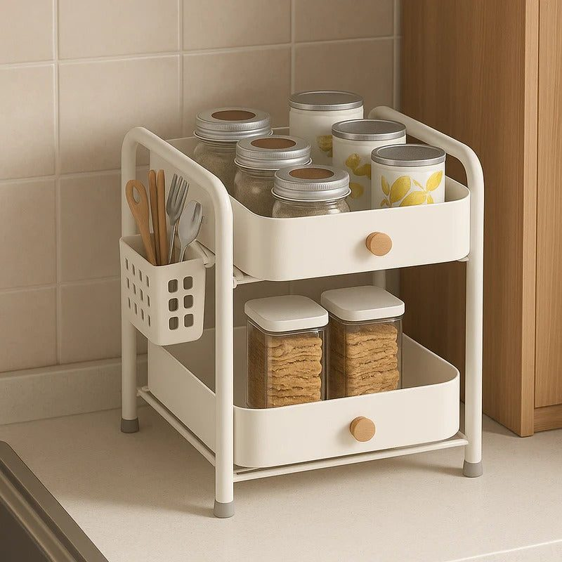
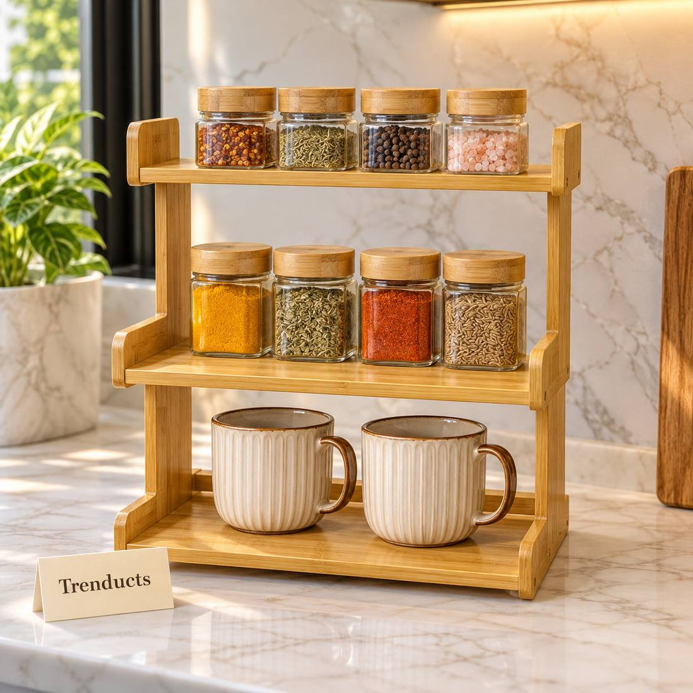

Kitchens in many Pakistani flats and newer houses are compact, yet the list of things that need a spot keeps growing. A microwave, an electric kettle, a toaster or sandwich maker, the spice jars, the masala dabba, the bread, the chai box and a fruit basket all compete for the same short stretch of counter. By the time everything is out, there is barely room to roll a roti.
The answer is usually not a bigger kitchen. It is using height. Racks and tiered organisers turn one level of counter into two or three.
Start by clearing and sorting
Take everything off the counter. Put back only what you use every day. Items used weekly, like a blender or a large tray, can live in a cabinet. Items used rarely, such as a sandwich maker you bought during lockdown, can go higher up or into storage. This alone often frees a surprising amount of space.
The microwave rack
The microwave is usually the bulkiest item on the counter. An adjustable rack that goes over it creates a shelf above for spice jars, tea and sugar containers, or a fruit basket. Some racks also have side hooks for gloves, ladles or towels.

Before buying, measure your microwave's width and height and leave space around it for ventilation; most microwaves need some clearance on top and sides. Check that the rack's shelf can hold the weight you plan to put on it.
Two-tier countertop organisers
A two-tier organiser in a corner is ideal for daily items: oil bottles, salt and chilli jars, tea and coffee. The top tier holds lighter items; the bottom holds heavier bottles. Multi-function organisers with drawers or side holders can also hold cutlery or cling film.
Wooden and bamboo shelves
A three-tier bamboo stand is attractive enough to leave on show and works well for spices, small plants or cookbooks. It suits kitchens where you want a warmer, more natural look than metal.
A layout that works
- Cooking zone beside the stove: oil, salt, spices and ladles within arm's reach.
- Prep zone with clear counter: chopping board, knife block and the main working area kept empty.
- Appliance zone: microwave with a rack above, kettle nearby.
- Breakfast zone: bread, tea box and mugs together, often on the microwave rack.

Grouping items by task cuts down on walking back and forth and keeps the prep area clear.
Keep heat and safety in mind
Do not place a plastic organiser right next to the stove, where heat can warp it. Keep paper towels and cloth away from burners. Make sure appliances are not overloaded on a single socket with extension boards, and unplug small appliances when not in use.
Cleaning around racks
Racks collect dust and kitchen grease. Once a week, remove items from the top shelf and wipe it down. Wipe the microwave top before placing the rack, and check under it occasionally. Bamboo can be wiped with a slightly damp cloth and dried well.
Using the wall
If counter space is still tight, look up. Wall hooks for ladles, a magnetic strip for knives and a small hanging shelf for spices free the counter further. Many of these can be fixed without major drilling.
Renting or moving soon
If you rent, freestanding racks are the best option because they need no installation and move with you. Choose adjustable designs that can fit different microwave sizes and counter depths, in case your next kitchen is laid out differently. Neutral colours like black, white or natural bamboo suit most kitchens and will not clash with the next set of cabinets.
Finding organisers
For microwave racks, tiered countertop organisers and bamboo shelves, browse the rack and storage organizers at Trenducts.pk, with delivery across Pakistan.
A kitchen that works with you
Cooking is easier when you can see what you need and have room to work. A few well-chosen racks turn a cramped counter into an organised workspace, and the extra room to roll a roti is worth every rupee.